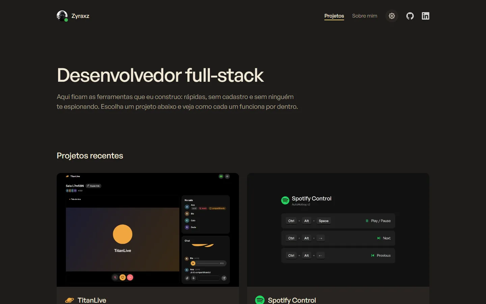
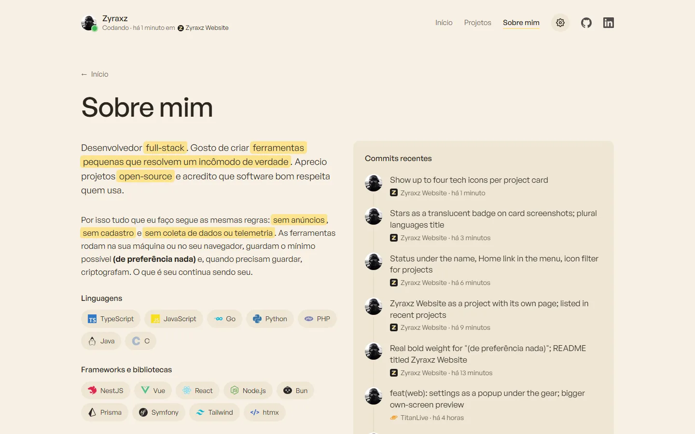
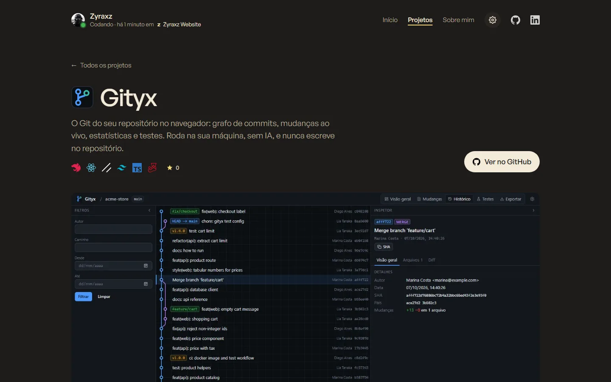

Zyraxz Website
Zyraxz Website
Este portfólio: um site estático, sem build e sem rastreadores, que se atualiza sozinho com os dados do meu GitHub.This portfolio: a static site with no build step and no trackers that keeps itself up to date with my GitHub data.


 0
0

O que fazWhat it does
- Projetos recentes escolhidos sozinhos pelo último push, e filtro por tecnologia.
- Recent projects picked automatically by the latest push, and a technology filter.
- Status "codando", commits recentes, barra de linguagens e calendário de contribuições, atualizados de hora em hora.
- "Coding" status, recent commits, a languages bar and the contributions calendar, refreshed every hour.
- Português e inglês, tema claro e escuro em tons pastel, aplicados antes de pintar a tela.
- Portuguese and English, pastel light and dark themes, applied before the first paint.
- Páginas de projeto com capturas que abrem em tela cheia.
- Project pages with screenshots that open full size.
- Imagens em WebP com miniaturas, SEO com sitemap e prévia ao compartilhar.
- WebP images with thumbnails, SEO with a sitemap and share previews.
Como funcionaHow it works
Não tem framework nem build: são páginas HTML, um CSS e alguns scripts pequenos. Uma tarefa do GitHub Actions roda de hora em hora, busca estrelas, commits, linguagens e contribuições, salva num arquivo JSON e publica o site.There is no framework and no build: just HTML pages, one stylesheet and a few small scripts. A GitHub Actions job runs every hour, fetches stars, commits, languages and contributions, saves them to a JSON file and publishes the site.
Nenhum pedido a terceiros. A fonte e todos os ícones são servidos pelo próprio site, e os dados do GitHub vêm de um arquivo gerado no deploy. Quem visita só conversa com o GitHub Pages.No third-party requests. The font and every icon are served by the site itself, and the GitHub data comes from a file built at deploy time. Visitors only talk to GitHub Pages.
Como rodarRun it
git clone https://github.com/SamuelSchutz13/Zyraxz-website.git cd Zyraxz-website python -m http.server 8000 # ou: npx serve# or: npx serve
ImagensImages

